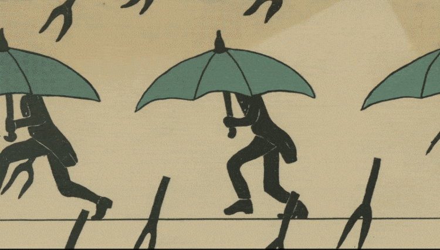
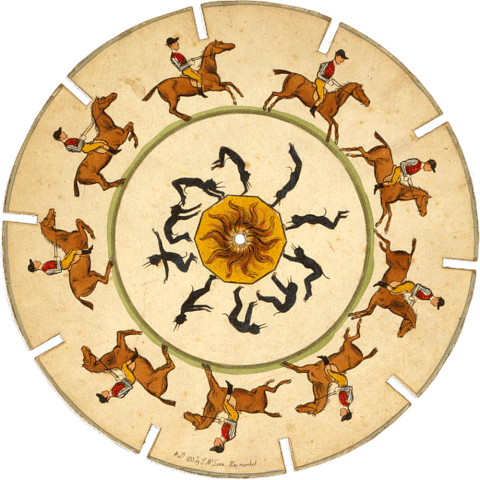

La synesthésie est un phénomène neurologique dans lequel plusieurs sens sont associés :
voir des sons, entendre des couleurs, ressentir des formes.
Cette interface explore ces croisements sensoriels à travers l'image, le son et l'interaction visuelle.
Zootrope
Une bande animée est observée à travers les fentes d’un cylindre en rotation. Cela crée une illusion de mouvement fluide.

Phénakistiscope & Praxinoscope
Ces dispositifs utilisent des disques illustrés ou des miroirs pour projeter une animation continue lors de la rotation.
